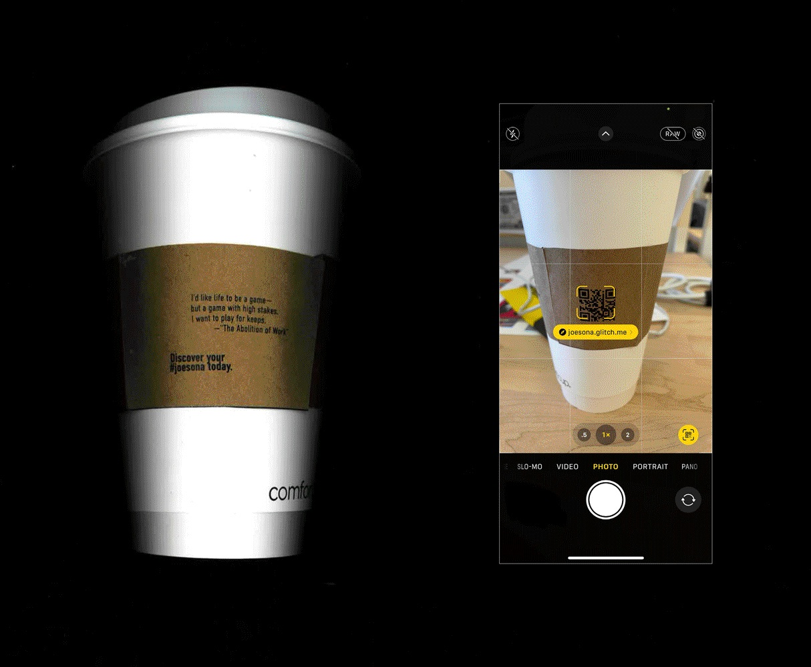
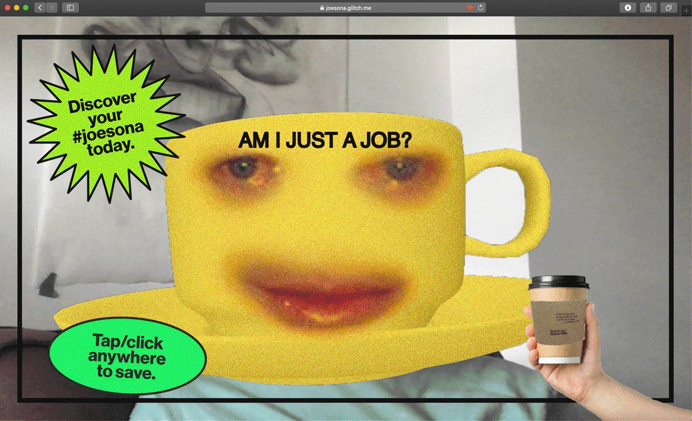
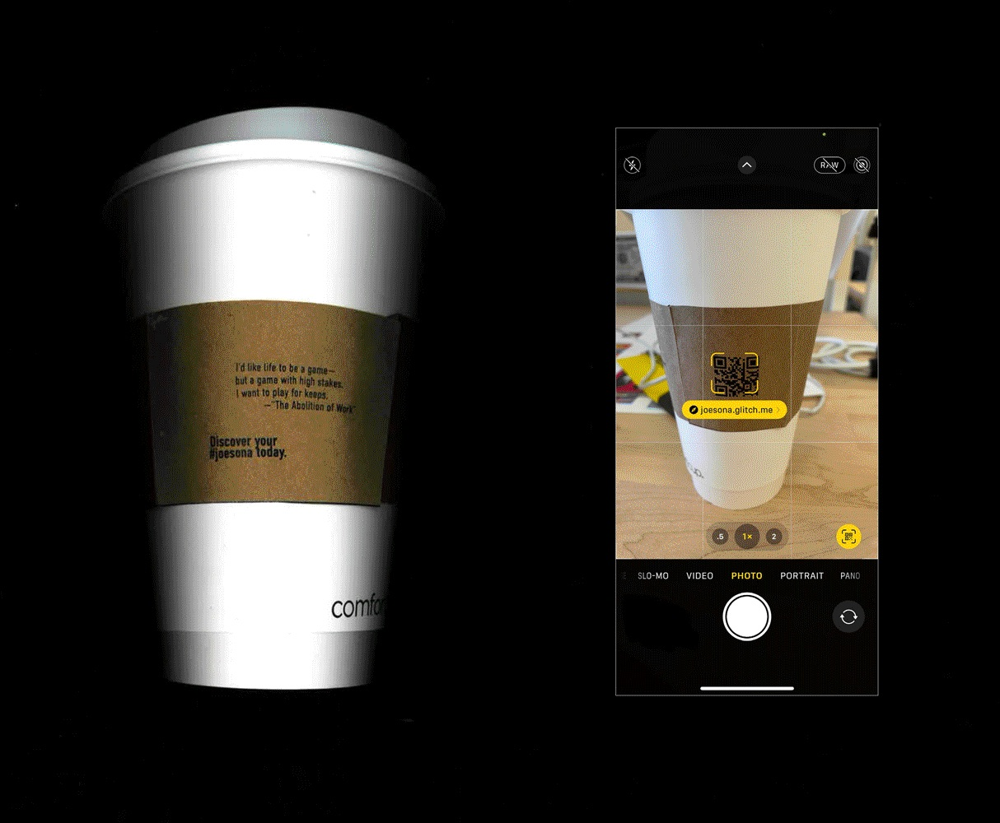
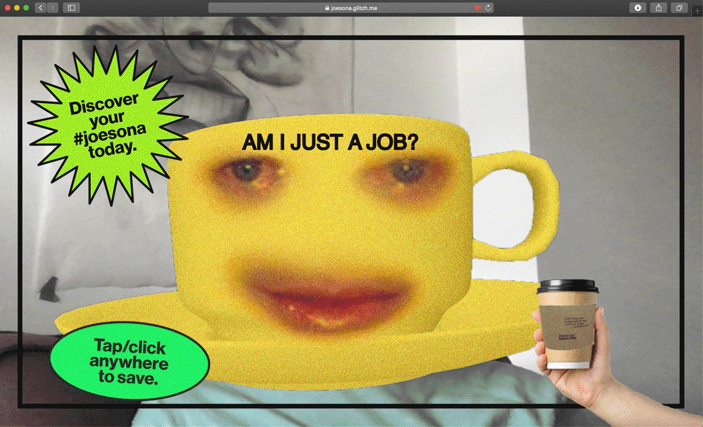

On Work is a set of four coffee sleeve that wonder about the nature of work. Inspired by Corporate Memphis, tech/onboarding screen illustrations, and the video game Going Under, these coffee sleeves ponder the reality of the industrialization of time and the way work consumes a person’s identity.
Each sleeve features a question that relates to a quote excerpted from Bob Black’s “The Abolition of Work” and a QR code linking to a low-fidelity prototype of a selfie filter, drawing on workplace coffee culture. (Prototype contains flashing images.)